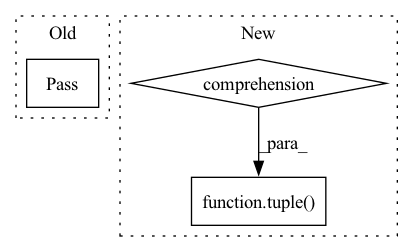

Pattern ID :14849
Before Change
def forward(self, *input_tensors):
assert self.finished
// TODO
pass
After Change
def forward(self, *input_tensors):
assert self.finished
weight_tensors = tuple( field.to_torch(device=self.device) for field in self.weight_fields.values())
return self.tin_func.apply(self.tin_configs, *(input_tensors + weight_tensors))
In pattern: SUPERPATTERN
Frequency: 3
Non-data size: 3
Instances Fragment ID: 49374481
Project Name: ifsheldon/stannum
Commit Name: 6b2e1ccc378978b4ed8fe0d0eb7432b5d361af3b
Time: 2021-07-09
Author: feng.liang@kaust.edu.sa
File Name: tin.py
M Class Name: Tin
N Class Name: Tin
M Method Name: forward(1)
N Method Name: forward(1)
M Parent Class: torch.nn.Module
N Parent Class: torch.nn.Module
M File Name: tin.py
N File Name: tin.py
M Start Line: 124
M End Line: 124
N Start Line: 150
N End Line: 151
Before Change
reg_max = region_max_value[cl - 1] // np.max(weights)
if len(weights) == 0:
pass
// weights = np.exp(2 * weights) - np.exp(-2)
// weights = softmax(weights)
try:After Change
maxima_coords = []
for cl in classes:
// coords =
coords = tuple( [c.astype(np.int16) for c in np.where(regions == cl)])
if len(coords[0]) == 0:
pass
weights = image[coords] Fragment ID: 49374480
Project Name: mpi-dortmund/tomotwin-cryoet
Commit Name: 8cb744b2c04760d76a4522cf9a9d5b1672ebdaa4
Time: 2022-07-12
Author: thorsten.wagner@mpi-dortmund.mpg.de
File Name: tomotwin/modules/common/findmax/findmax.py
M Class Name: AnonimousClass
N Class Name: AnonimousClass
M Method Name: get_avg_pos(4)
N Method Name: get_avg_pos(4)
M Parent Class:
N Parent Class:
M File Name: tomotwin/modules/common/findmax/findmax.py
N File Name: tomotwin/modules/common/findmax/findmax.py
M Start Line: 434
M End Line: 449
N Start Line: 432
N End Line: 449
Before Change
try:
result = result.pin_memory()
except:
pass
result = result.numpy()
memory_buffers[op_id] = result
After Change
batch_size,
batches_ahead)
elif isinstance(memory_allocation, Sequence):
allocated_buffer = tuple(
self.allocate_query(q, batch_size, batches_ahead) for q in memory_allocation
)
memory_buffers[op_id] = allocated_buffer
Fragment ID: 49374483
Project Name: libffcv/ffcv
Commit Name: 1e28d9884436db64131ee02d545d2c5374f19dc9
Time: 2021-11-13
Author: leclerc@mit.edu
File Name: ffcv/pipeline/pipeline.py
M Class Name: Pipeline
N Class Name: Pipeline
M Method Name: allocate_memory(3)
N Method Name: allocate_memory(3)
M Parent Class:
N Parent Class:
M File Name: ffcv/pipeline/pipeline.py
N File Name: ffcv/pipeline/pipeline.py
M Start Line: 70
M End Line: 105
N Start Line: 100
N End Line: 112